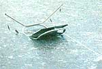
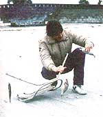
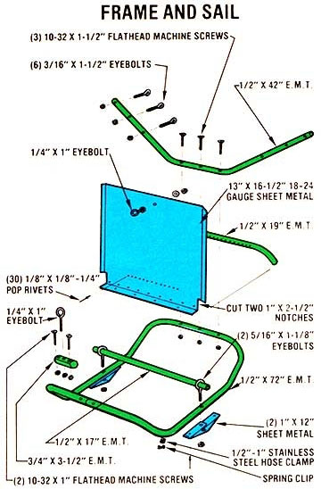
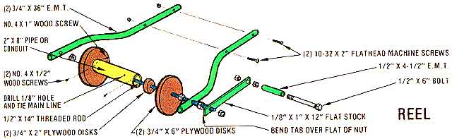

"Deep sea" fishing from the water's edge? Without long-distance casting? It's possible, if you build . . .
Although living in Goteborg, Sweden puts me some 5,000 nautical miles from MOTHER's home, my enthusiasm for the many crafts and alternative energy projects featured in her pages isn't dampened in the slightest by that distance. And since I'm sure there are others who have the same fascination with "things that work" that I have, I thought I'd share the design for a fishing machine that I recently built and tested here in the Kattegat strait.
In all honesty, I can't say I came up with the idea for "Galloping Gerty" myself. She was (as far as I've been able to discover) conceived in New Zealand, where her job is to carry fishing lines hundreds of yards out into the relatively shallow water surrounding much of the island shoreline there . . . in order to snag the strapping bottom feeders that lurk in the normally unfished regions. I did, however, make some modifications to the basic design that have allowed me to use Gerty at a local rocky beach. I also set up my own arrangement for fastening the hook leaders . . . and incorporated a small snap-clip on the old girl's frame to enable her to drag my regular surf-fishing line out farther than I could ever hope to cast, even with waders.
The theory behind the machine's operation is really quite simple: The frame is merely an underwater sled-with both its shore and sea ends turned upward-to which a flat, bottompivoting sail is attached. This centrally placed wing has stops that allow it to move only between a full upright position and one about 30° above horizontal. The device's main line is connected-through an eye on the frame's shore end-to the top of the sail ... and outriggers, extending from the sled's sea end, are equipped with rings to which leaders can be fastened.
When the contraption is placed in the surf (with 100 or more yards of strong 1/8" line attached to a reel planted firmly on shore), the action of the receding waves pushes the sail to the upright position and skids Gerty out to sea along the sloping ocean floor. Then, when she reaches the end of her rope, the tightening line draws the sail down against the frame, and the water currents lose their effect because there's nothing to push against. Later, when it's time to reel the sled in, the slight angle of the sail in its closed position (which was one of my contributions to the design) is enough to lift Gerty and her catch to the water's surface, where both the frame and the fish are safe from rocks and other snags that might cause problems during the return trip.
Since I enjoy tinkering, building my own Galloping Gerty was almost as much fun as using her has been . . . especially since most of the parts were salvaged from scrap. For example, the sled's frame is just a 6-foot length of electrical conduit bent to the occasion and locked into a loop with another piece of larger-diameter tubing. The sail started life as a Volvo door panel. Everything else-with the exception of the fishing tackle, the 1/8" main line, and some of the less common hardware items-can be made from garden-variety junk.
Of course, there's no need to think that my way is the only way. Feel free to use any formable material for the frame (as long as it's fairly strong and doesn't float) and any kind of plate for the sail. In fact, about the only thing to bear in mind in choosing components is the nature of Gert's environment. Salt water attacks both aluminum alloy and steel, so it'd be best to take measures to preserve either of those metals, perhaps by roughing up their surfaces slightly and applying a coat of fiberglass resin. If you plan to fish a freshwater lake, however (which is entirely possible so long as it's large enough to sustain sizable waves and has an appropriately sloping underwater "beach"), regular paint should serve to protect any ferrous parts.
My first step was to take the 72" section of 1/2" E.M.T. and locate its center. Then I measured about 3-1/2 inches to each side of that point, and-using a manual conduitbending tool, which can be a reasonably inexpensive boon to any handyperson's workshop-I created two 90° arcs, facing in the same direction and starting 7 inches apart (they took up about 10"of tube apiece). Next, I made two more bends beginning where the others ended, these perpendicular to the first pair and forming 145° angles.
With this done, I marked off two straight 10" sections and fashioned two more 145° bends at the ends of these measured segments. Then I completed the loop by shaping a second pair of right angle arcs identical to the first, causing the conduit's ends to come within an inch or two of each other at a point roughly opposite the center point from which I'd made my initial measurements.
To join the loose ends, I simply took a 3-1/2" length of 3/4" conduit and split it lengthwise, then slipped it over both of the 1/2" tips and secured it with 10-32 flathead machine screws. (By damaging the exposed threads on all the screw fasteners, I assured myself that the nuts would stay put.) I also took the opportunity to attach a 1/4" X 1 " eyebolt to the center of the sleeve, to serve as a guide for the main line.
The sail and its pivot bar were equally simple to make: I first cut a 13" X 16-1/2" rectangle from the skin of an old car door (any flat piece of 18 to 24 gauge metal-such as a cookie sheet-should do) ... sliced a 1" X 2-1/2" notch from each corner on one long side ... and bent the resultant 14-1/2" tongue at a 90° angle to the sail's main body, forming the crease about an inch from the tab's edge.
After that, I bent the sail's sides to form 3/4" lips, turned the same direction as the initial bend but angled to only 45°. (Since the metal plate was thin enough to form easily, I didn't need a bending brake. Instead, I just clamped the sheet to a piece of lumber and used another length of wood and a hammer to make the required angles.)
Once the sail was completed, I fastened it to a 17" section of 1/2" E.M.T.-right at the crook of its perpendicular-by drilling a series of holes through both the conduit pivot bar and the sheet (so that some were on the sail's face and others on the tongue) and punching in pop rivets. (Of course, small bolts fastened straight through the bar would've worked equally well.)
Then, in order to prevent the aquatic wing from being pushed beyond its full upright position, I bent a 19" piece of 1/2" conduit to create 3" arms-angled at 40°-at each end of the bar, and secured the tubular stop to the sail on the side opposite the hinge and about 1-1/2 inches above it . . . so that the arms contacted the sled's frame when the sail was positioned vertically.
To attach the sail assembly permanently, I just laid the upper edge of the plate against the eyebolt on the frame, then marked the points at which the pivot bar met the sled runners and drilled holes through those tubes. By slipping 5/16" X 1-1/8" eyebolts over the ends of the sail's pivot bar and fastening them through the sled frame, I created a hinge that was both simple and sturdy. Another 1/4" X 1 " eyebolt allowed me to fasten Gerty's main line to the upper edge of the sail . . . after first passing it through the ring on the frame.
It occurred to me, when I looked at the bolt ends protruding through the bottom of the sled, that it would be best to shield these extensions so they wouldn't snag on the ocean floor. I did so by bending two 1 " X 12" scraps of sheet metal into 5" oblong loops with overlapping ends, and fastening them over the threaded stubs-using the eyebolts' nuts and a few pop rivets-to form noncatching skids.
I completed the frame by bending, at 40°, a 42" length of 1/2" conduit to the right and left of an 8" section I'd marked out in the tube's center, and securing this outrigger to Gerty's "prow" with three 1-1/2" 10-32 bolts. A half-dozen 3/16" X 1-1/2" eyebolts, fastened to these extensions, provided places to tie leaders and baited hooks.
In order to keep Gerty's several hundred feet of main line from getting tangled-and also to provide myself with a convenient means of bringing her back to shore-I whipped together a very basic reel and stand assembly. First, I bent two 36" lengths of 3/4" conduit in such a way that they'd form a "Y" (with a 12" span) when bolted together. Then I cut one pair of 6" and one pair of 2" disks from a piece of 3/4" plywood and centerdrilled all four of them with a 1/2" bit. Next, I bored a 1/8" hole through a 2" X 8" piece of pipe and knotted the free end of the line inside that drum.
I fastened the smaller set of disks inside the ends of the pipe with two screws, and slid a 14"long section of 1/2" threaded rod through the thusmodified drum. Finally, I slid the larger disks over the ends of this axle and tightened them up snugly against the pipe drum with 1/2" nuts ... making sure the center rod protruded about 2" farther at one end than at the other. As an extra measure of security against slippage, I also drilled a small hole obliquely through the edge of the pipe and into one of the disks, and drove a wood screw into the opening.
With this completed, I constructed a crank by boring two 1/2" holes through a piece of 1/8" X 1 " X 12" flat stock-one 1/2 inch from the end and the other 1-1/4 inches from the opposite end-and used two nuts to fasten a simple grip (made from a 1/2" X 6" bolt with a section of 1/2" E.M.T. around it) on the "short" end of the handle. Then I drilled two more 1/2" holes through the arms of the Y, slipped them around the spool's axle, and bolted the two halves together. I finished up by locking the remaining end of the handle to the axle with a pair of nuts, and hammering the protruding tab over a flat of one of the nuts, before reeling the line on to the drum.
Gerty's performance will, of course, vary with the conditions-under which you choose to use her. A gently sloping, smooth beach floor seems to allow her to move best (especially when the water is shallow and has a considerable degree of disturbance or undertow). But, even under the worst of conditions such as those prevalent at my stretch of rocky beach-the old gal didn't disappoint me by any means, and reached the limit of her travel in just a few minutes!
Generally I first bait the outrigger hooks (bits of mullet work well), then pinch the end of my baited surf-fishing line in a small clip which I fasten to the side of Gerty's frame with a hose clamp. After driving the spool stand firmly into the sand near the water's edge, I put Gerty in the surf and let her "walk" out to sea while I hang on to my casting outfit. When the main line is completely played out, I use my rod to flick the monofilament from Gerty's flank clip (this procedure isn't as difficult as it sounds, once you've had some practice) and get some surf fishing in. After an hour or so, I set the rod aside and reel the sled in smartly, bringing Gerty clear to the surface with her haul . . . and when she comes ashore, l bag the catch and send her out for more.
Although I can't promise you that Galloping Gerty will put fish on your table every time, I feel pretty confident that she'll at least perform as she's supposed to. And even in every piscatorial pilgrimage isn't a complete success, you'll have a lot more fun just fishing with this device than you ever thought possible!
|
 |
 |
 |
|
 |
|
|